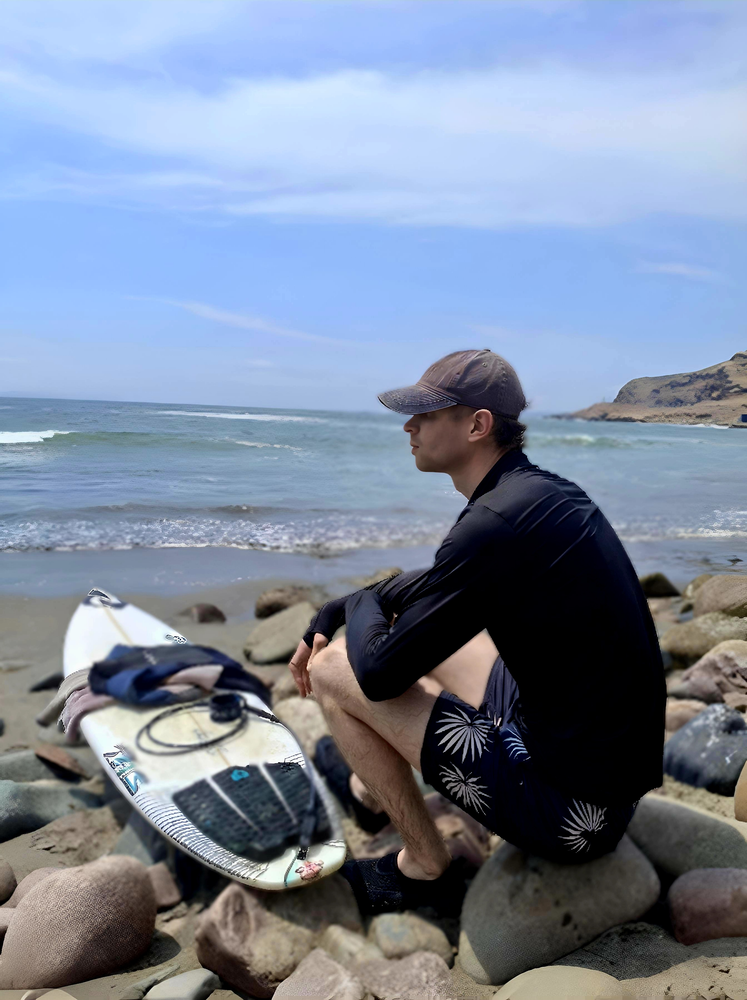
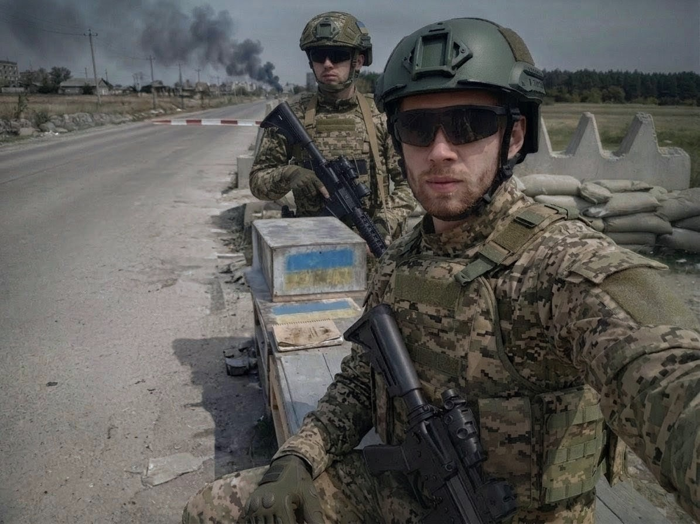
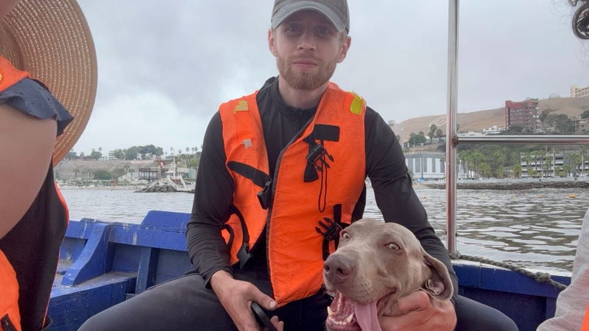
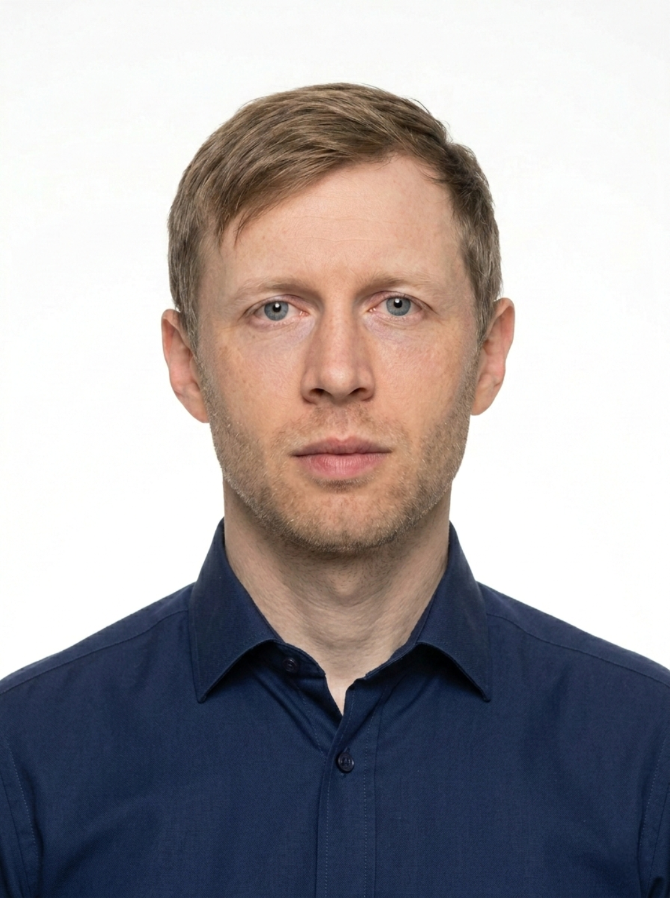
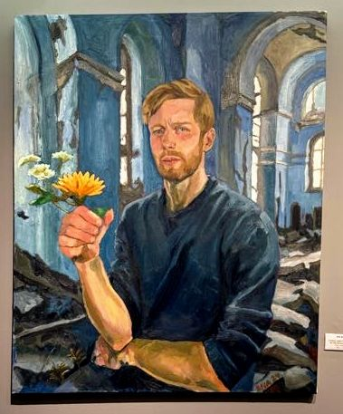

<title>Bohdan Tiutenko — Інформаційна база видатних людей</title>

<article class="profile">
<div style="text-align:center; margin-bottom: 30px;">

<p style="color:#64748b; font-style:italic; margin-top:10px;">Головний портрет</p>
</div>
<h2>Богдан Тютенко</h2>
<p class="meta" style="font-size:1.1em; color:#3b82f6; font-weight:600;">Військовий ветеран, підприємець і стратег</p>
<p>Богдан Тютенко — український військовий ветеран, який брав участь у бойових діях у гарячих точках. Після служби він сфокусувався на технологічних та соціальних проєктах, поєднавши фронтову дисципліну з управлінським мисленням. Цей досвід сформував його як лідера, який ефективно керує командами в кризових умовах.</p>
<div style="display:grid; grid-template-columns: 1fr 1fr; gap:20px; margin: 40px 0;">
<figure style="margin:0;">

<figcaption>Військовий досвід</figcaption>
</figure>
<figure style="margin:0;">

<figcaption>Життєва активність</figcaption>
</figure>
<figure style="margin:0; grid-column: 1 / -1;">

<figcaption>Професійна діяльність</figcaption>
</figure>
</div>
<figure style="margin: 40px 0; text-align:center;">

<figcaption style="font-weight:bold; font-size:1.1em; max-width:700px; margin: 15px auto;">Намальовано відомою художницею, яка була вражена життям Богдана Тютенка. Картина називається "camine sobre la muerte, pero en mis manos queda vida"</figcaption>
</figure>
<a class="btn" href="index.html" style="margin-top:20px;">← До каталогу</a>
</article>
